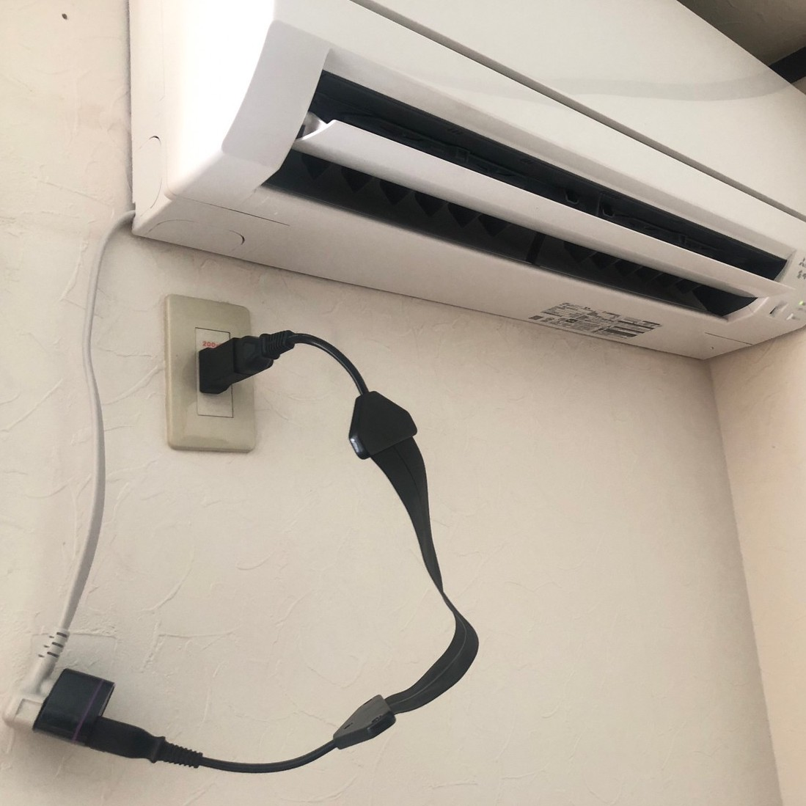
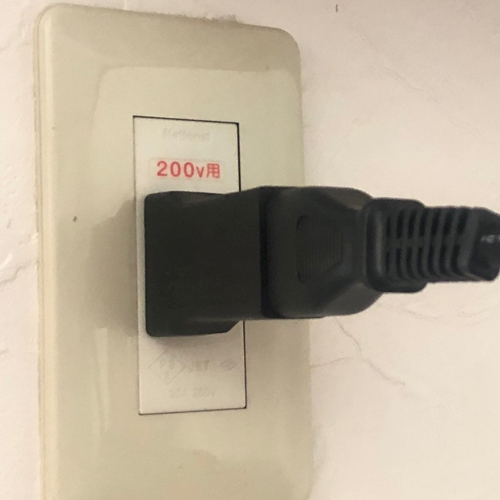
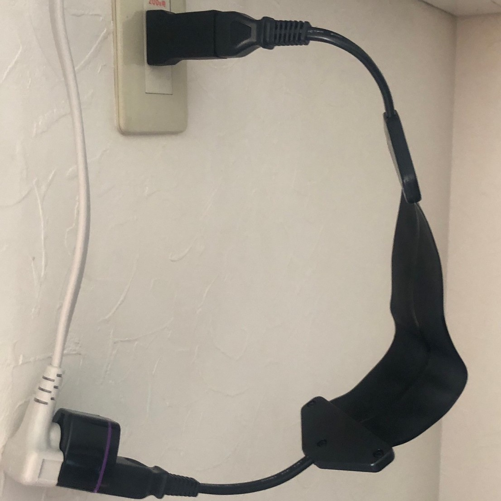
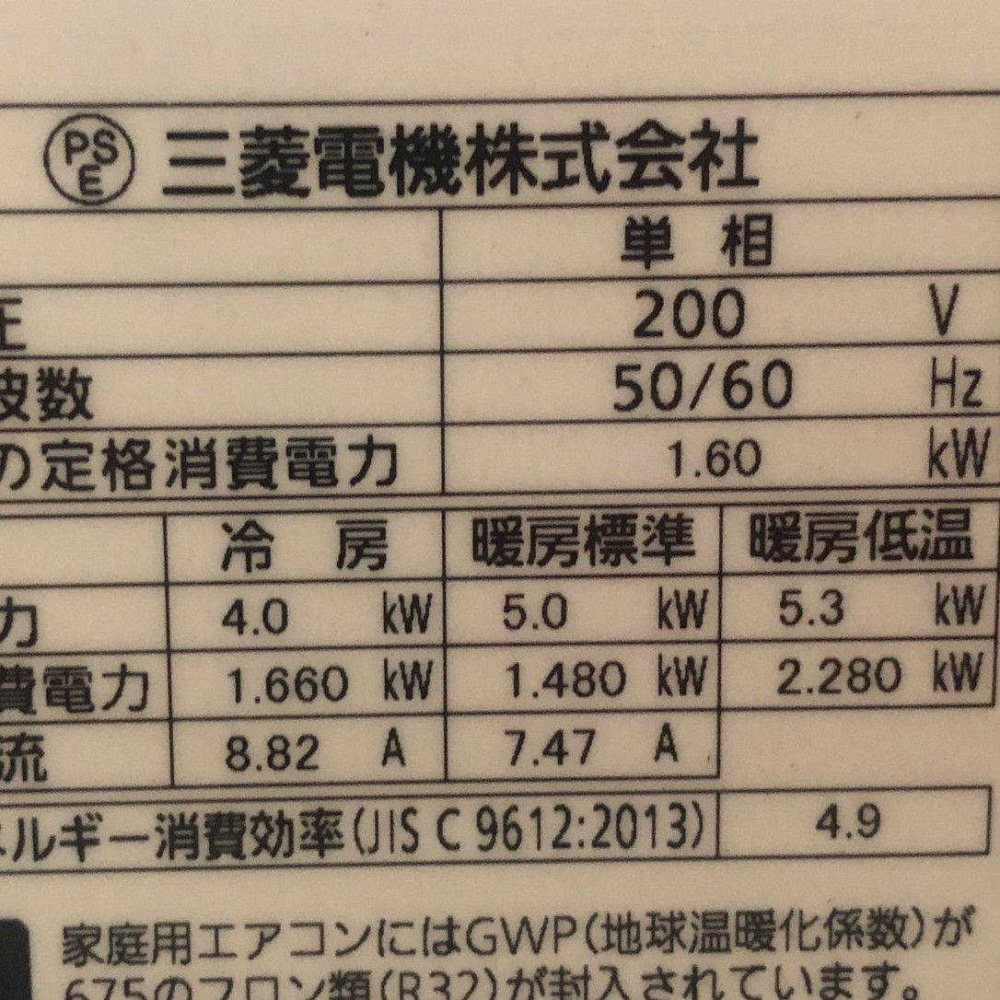
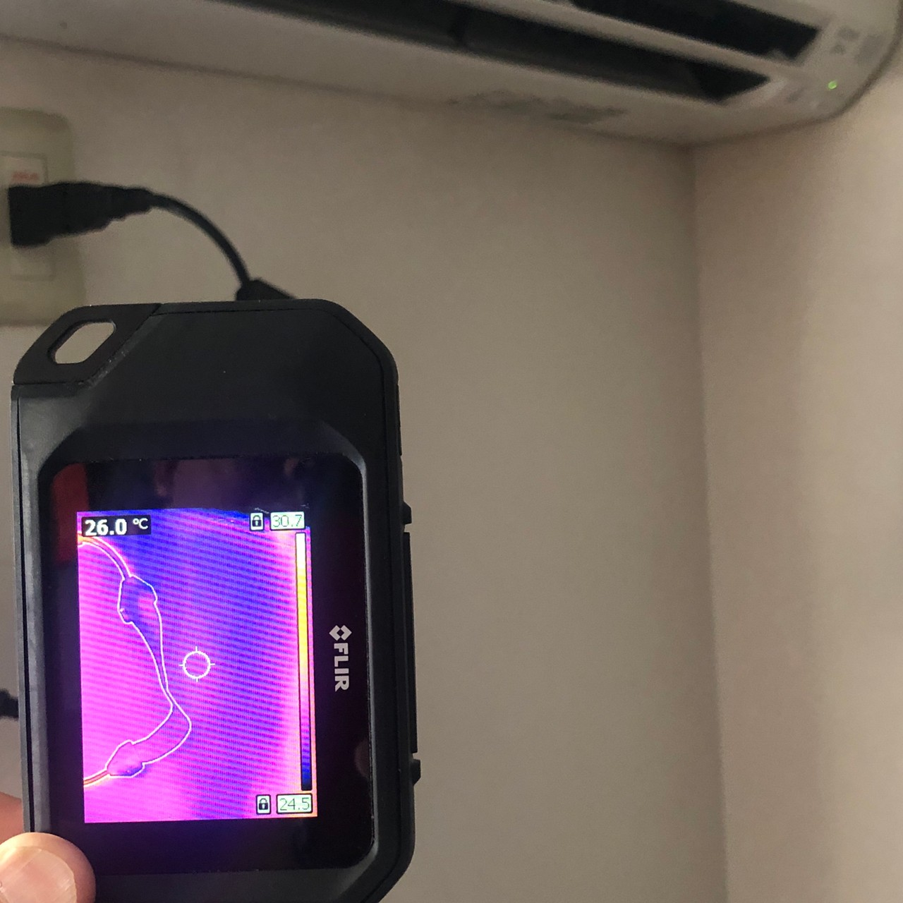
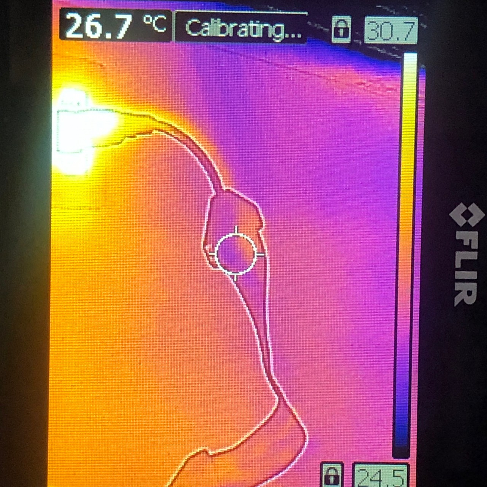
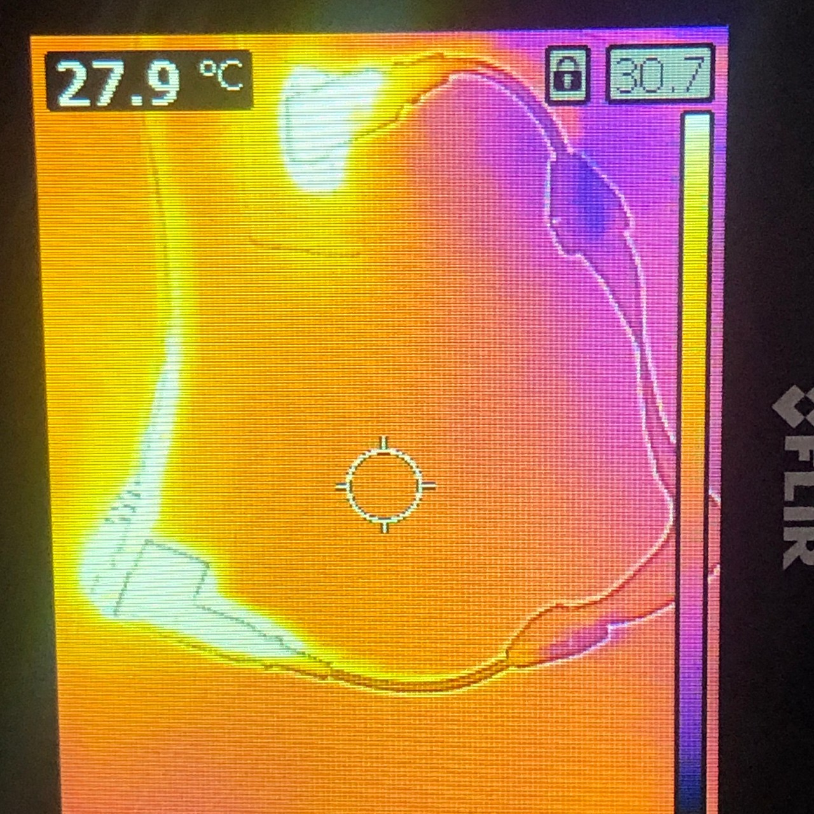
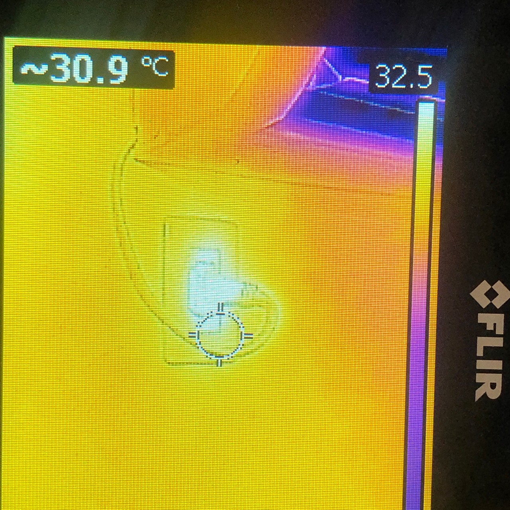
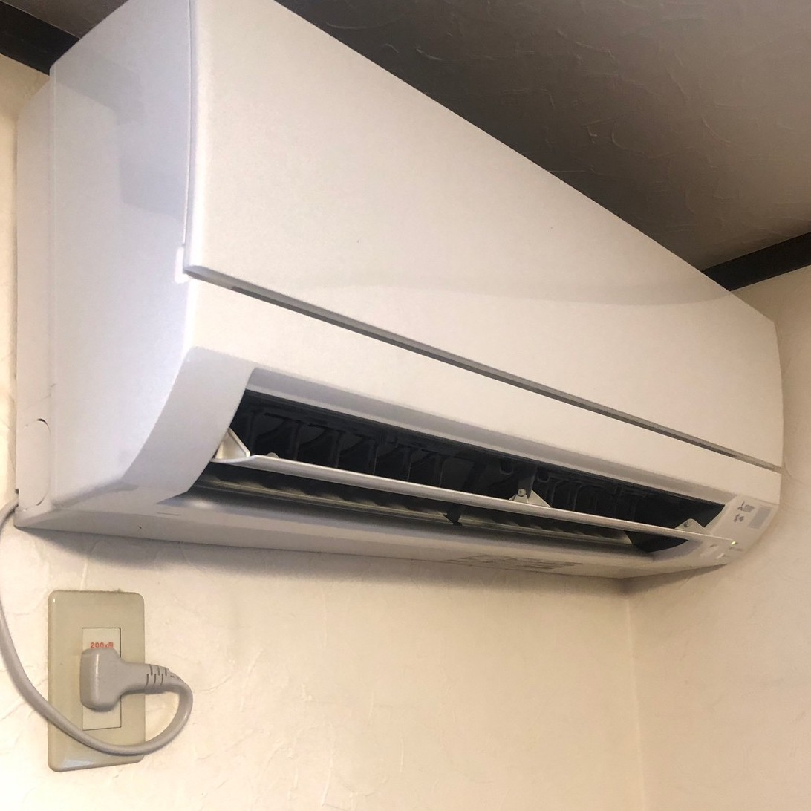

Notes
About the Products...
- We are committed to using high-quality materials for the cord, flat section, and plastic connectors.
- The products are meticulously handcrafted by Japanese artisans.
- The plugs have obtained PSE certification.
- The assembly process is also carried out entirely by skilled craftsmen. As a result, there may be slight variations in color or areas that may appear dirty, similar to handmade leather products.
- Please note that due to the nature of handmade production, we are unable to mass-produce our products. We appreciate your understanding.
- Please be aware that the product may develop wrinkles due to temperature. Applying warm air from a hairdryer will restore it to its original condition.
- Products with electrical plugs are designed for use in the US. Outlets and voltage differ internationally and this product may require an adapter or converter for use in your destination. Please check compatibility before purchasing.
- Black Flat Cord will be shipped intermediary. Other colors takes approximately 30 days to ship.
About the Package...
The package or additional packaging materials, instruction manual and warranty certificate are not included. The product itself will be securely wrapped in bubble wrap and shipped using an envelope.
Disclosure Statement
Flat Cord Description
Flat Cord manufactured and sold by our company was developed and intended for sale exclusively in Japan. The Extension Power Supply Cord was developed before any impact from Japan's Electric Safety Law.
However, due to subsequent revisions to the electric safety law, the use of copper sheet conducts in Flat Cord made it non-compliant with the regurations for extension cords (strips), even though it's safe.
In Japan, the standard was 100V 15A (1500W), but due to clasify the product as being outside the electric safety law, we now label them as 99.9V or below, 15A(1500W) We kindly request thet you only use these cords whithin the specified voltage range.
The plug part (outlet part) adheres to the electric safety law and manufactured to recieve PSE certification as proof of passing safety inspections.However, the flat part, with copper sheet conductor, cannot obtain PSE certification as an extension cord.
Nevertheless, thermographic imaging has confirmed that during the operating experiment with a 200V air conditioner, the tepreature of the flat part was lower than that of the plug part. This provides evidence that flat part, which lacks PSE certification like the plug part, is indeed safe.
We believe our product is revolutionary and intended for safe use worldwide.
Test results show the following values:
1500 (W) ÷ 100 (V) = 15 (A)
1500 (W) ÷ 220 (V) = 6.8 (A)
In countries like the EU, using this product may require a proper plug adapter, available for purchase on platforms like Amazon.
Japanese Extension Cords Usable Overseas
In conclusion, Japanese extension cords can be used overseas without any safety concerns. However, using extension cords purchased abroad in Japan may lead to issues.
Typically, extension cords and multi-taps sold in Japan are labeled as 125V, 15A. The critical value here is "Amps (A)" rather than the voltage (V), which is more important for chargers.
Chargers labeled "100-240V" can be used worldwide, while those specified as "100V" may require a voltage converter for overseas use.
When it comes to extension cords (extension cables), the crucial factor is their capacity to handle current (A).
Japanese extension cords are designed to handle higher current loads, making them suitable for overseas use.
In Japan, the voltage is 100V, and the formula "Wattage (W) = Voltage (V) × Amps (A)" is used to calculate power consumption.
For example, a 1500W appliance in Japan requires 15 Amps of current (1500W ÷ 100V = 15A).
In countries with higher voltage, like 220V, the current required to power the same 1500W appliance is lower (1500W ÷ 220V = 6.8A).
Japanese extension cords with a 15A rating are compatible with overseas use, as they can handle the necessary current.
However, extension cords purchased abroad are often rated at 250V, 6A, which might not supply enough current to power Japanese appliances at the lower voltage in Japan.
Products labeled as "Overseas-Compatible Multi-Taps" often state "Not for use in Japan." This is because they are designed for lower current flow, similar to extension cords sold abroad.
Using electrical appliances requires considering the formula: "Current (A) × Voltage (V) = Power Consumption (W)."
Japanese extension cords are made with thicker wires to handle higher current flow.
Extension cords purchased abroad, being designed for lower current flow, may have thinner wires, increasing the risk of electrical leakage and fire hazards when used in Japan.
In summary, using Japanese extension cords abroad is safe and recommended. However, using extension cords purchased abroad in Japan may not be suitable for powering Japanese electrical products.
The flat cord is an innovative product, and the laws governing wires and extension cords (extension cables) have not yet fully accommodated its unique design.
The flat cord is designed to support up to 99.9V and 1500W, complying with electrical laws when applied to the formula "Current (A) × Voltage (V) = Power Consumption (W)." Please use it responsibly and in accordance with applicable electrical laws.
Customers who purchase our innovative flat cord (flat cable) acknowledge and understand the information provided above and pledge to comply with the electrical safety laws in their respective countries when using the product. They also agree that the responsibility for safe usage lies solely with the purchaser and user.
Photos from the Experiment
- 
- 
- 
- 
- 
- 
- 
- 
- 